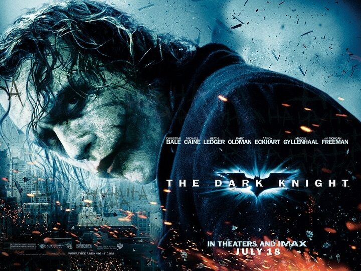
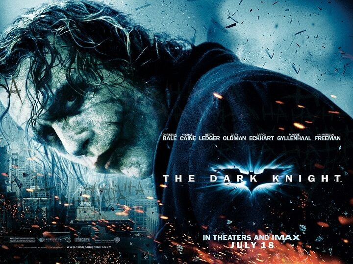

Interstellar
Interstellar is a 2014 epic science fiction film directed by Christopher Nolan, who co-wrote the screenplay with his brother Jonathan. It stars Matthew McConaughey, Anne Hathaway, Jessica Chastain, Bill Irwin, Ellen Burstyn, and Michael Caine. Set in a dystopian future where Earth is suffering from catastrophic blight and famine, the film follows a group of astronauts who travel through a wormhole near Saturn in search of a new home for mankind.
Interstellar was released in theaters on November 7, 2014. In the United States, it was first released on film stock, expanding to venues using digital projectors. The film received generally positive reviews and grossed $681 million worldwide during its initial theatrical run, making it the tenth-highest-grossing film of 2014. Among its various accolades, Interstellar was nominated for five awards at the 87th Academy Awards, winning Best Visual Effects.
Batman:The Dark Knight
 

The Dark Knight is a 2008 superhero film directed by Christopher Nolan, from a screenplay co-written with his brother Jonathan. Based on the DC Comics superhero Batman, it is the sequel to Batman Begins (2005), and the second installment in The Dark Knight trilogy. The plot follows the vigilante Batman, police lieutenant James Gordon, and district attorney Harvey Dent, who form an alliance to dismantle organized crime in Gotham City. Their efforts are derailed by the Joker, an anarchistic mastermind who seeks to test how far Batman will go to save the city from chaos. The ensemble cast includes Christian Bale, Michael Caine, Heath Ledger, Gary Oldman, Aaron Eckhart, Maggie Gyllenhaal, and Morgan Freeman.
Warner Bros. Pictures prioritized a sequel following the successful reinvention of the Batman film series with Batman Begins. Christopher and Batman Begins co-writer David S. Goyer developed the story elements, making Dent the central protagonist caught up in the battle between Batman and the Joker. In writing the screenplay, the Nolans were influenced by 1980s Batman comics and crime drama films, and sought to continue Batman Begins' heightened sense of realism. From April to November 2007, filming took place with a $185 million budget in Chicago and Hong Kong, and on sets in England. The Dark Knight was the first major motion picture to be filmed with high-resolution IMAX cameras. Christopher avoided using computer-generated imagery unless necessary, insisting on practical stunts such as flipping an 18-wheel truck and blowing up a factory.
Inception
Inception is a 2010 science fiction action heist film written and directed by Christopher Nolan, who also produced it with Emma Thomas, his wife. The film stars Leonardo DiCaprio as a professional thief who steals information by infiltrating the subconscious of his targets. He is offered a chance to have his criminal history erased as payment for the implantation of another person's idea into a target's subconscious. The ensemble cast includes Ken Watanabe, Joseph Gordon-Levitt, Marion Cotillard, Elliot Page,[a] Tom Hardy, Cillian Murphy, Tom Berenger, Dileep Rao, and Michael Caine.
Oppenheimer
Oppenheimer is a 2023 epic biographical thriller film written, produced, and directed by Christopher Nolan It follows the life of J. Robert Oppenheimer, the American theoretical physicist who helped develop the first nuclear weapons during World War II. Based on the 2005 biography American Prometheus by Kai Bird and Martin J. Sherwin, the film dramatizes Oppenheimer's studies, his direction of the Los Alamos Laboratory and his 1954 security hearing. Cillian Murphy stars as Oppenheimer, alongside Robert Downey Jr. as the United States Atomic Energy Commission member Lewis Strauss. The ensemble supporting cast includes Emily Blunt, Matt Damon, Florence Pugh, Josh Hartnett, Casey Affleck, Rami Malek, and Kenneth Branagh.
Oppenheimer was announced in September 2021. It was Nolan's first film not distributed by Warner Bros. Pictures since Memento (2000), due to his conflicts regarding the studio's simultaneous theatrical and HBO Max release schedule.[9] Murphy was the first cast member to join, with the rest joining between November 2021 and April 2022. Pre-production began by January 2022, and filming took place from February to May. The cinematographer, Hoyte van Hoytema, used a combination of IMAX 65 mm and 65 mm large-format film, including, for the first time, selected scenes in IMAX black-and-white film photography. As with many of his previous films, Nolan used extensive practical effects, with minimal compositing.